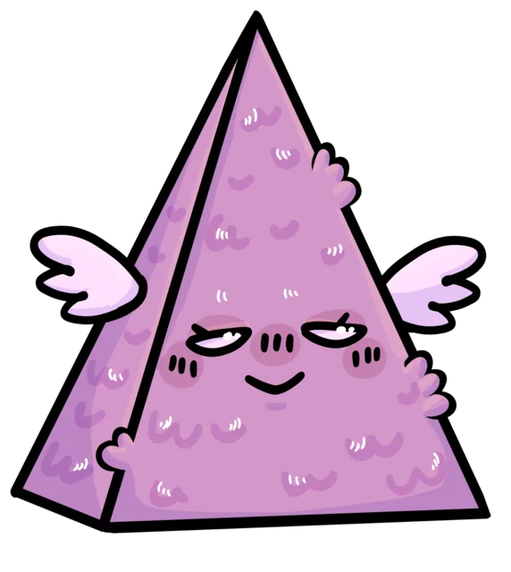
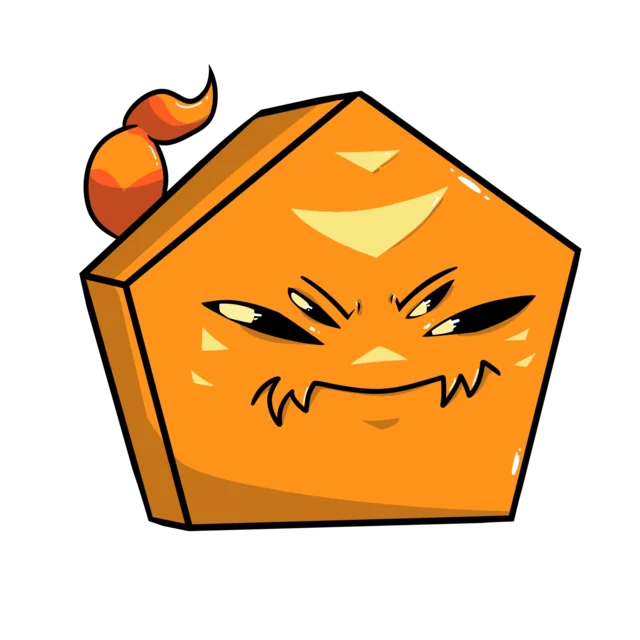
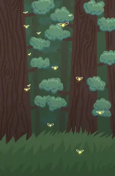

Ball is God?! Περιστρέψτε τον πύργο. Γίνετε η πρόσκρουση.
Ένα σκληροπυρηνικό arcade κάθετης καθόδου, όπου το οριζόντιο σύρσιμο περιστρέφει τον πύργο γύρω από το Espa που πέφτει. Παραλείψτε ασφαλείς προσγειώσεις, φορτίστε ένα combo smash και διαπεράστε έναν μυθικό κόσμο όπου ένα απροστάτευτο χτύπημα τερματίζει την προσπάθεια.
Ενεργή παραγωγή: δέκα σκηνές τοποθεσιών, αφεντικά, διακλαδούμενος διάλογος και μονοπάτια κάρμα που αλλάζουν τους κανόνες του παιχνιδιού.
Περιστροφήσύρετε τον πύργο γύρω από το Espa
Κίνδυνοςπαραλείψτε τρεις ασφαλείς προσγειώσεις
Σπάσιμοσπάστε την πλατφόρμα
Μέσα στο τρέχον build
Το κάρμα αλλάζει περισσότερο από τον διάλογο.
Τα φωτεινά, ουδέτερα και σκοτεινά μονοπάτια κάρμα αλλάζουν τη συμπεριφορά της ασπίδας, τις προειδοποιητικές ενδείξεις, την επιθετικότητα των εχθρών και τις φάσεις των αφεντικών, έτσι η ιστορία αλλάζει τον τρόπο που παίζετε.
Κατάσταση build Ενεργή παραγωγήΚαι οι δέκα κόσμοι διαλόγων
Φόντα διαλόγου για και τους δέκα κόσμους, με σειρά καθόδου, από Ena έως Deka.


Τρέχουσα διεπαφή χρήστη παραγωγής
Επιλογή επιπέδου, διάλογος και οθόνες αποτελεσμάτων στο τρέχον build.
Αυτή είναι η τρέχουσα ροή με τη σειρά που τη συναντάτε: επιλογή επιπέδου, διάλογος, μια επιλογή ορόσημο και έπειτα νίκη ή ξεχωριστή οθόνη ήττας. Κάθε εικόνα παρακάτω χρησιμοποιεί τέχνη από το project του Unity παραγωγής.
Η ουράνια διαδρομή επιλέγει τα δημιουργημένα επίπεδα σε δέκα κεφάλαια 100 επιπέδων.
Το μενού παραγωγής χαρτογραφεί δέκα τοποθεσίες σε κεφάλαια 100 επιπέδων και ανοίγει απευθείας στην επιλεγμένη προσπάθεια.

 201
201Ο διάλογος γίνεται μέσα στην τοποθεσία.
Το πορτρέτο του χαρακτήρα, η τέχνη της τοποθεσίας και η πινακίδα ομιλητή μοιράζονται ένα κάθετο πλαίσιο.


Shash
Συνεχίστε, λοιπόν, αλλά μην νομίζετε ότι θα είναι εύκολο. Σας περιμένουν δοκιμασίες που θα κάνουν όλα τα προηγούμενα να φαίνονται ασήμαντα.
04 / Επιλογή ορόσημου
Η απάντηση γίνεται μέρος της καθόδου.
Στα τοπικά επίπεδα 90 και 100, το ειδικό πάνελ ζητά απόφαση να χαρίσετε τη ζωή ή να σκοτώσετε, προτού ο διάλογος κλείσει την προσπάθεια.

Λυπηθείτε
Σκοτώστε
05 / Μενού αποτελεσμάτων
Η νίκη συνεχίζεται. Η ήττα επιστρέφει στην ίδια πρόκληση.
Το τρέχον build έχει δύο ξεχωριστές καταστάσεις αποτελεσμάτων: το PanelWin προσφέρει επανάληψη και το επόμενο επίπεδο, ενώ το PanelOver διατηρεί μία ξεκάθαρη ενέργεια επανάληψης.
Νίκη · PanelWin
Η κάθοδος ολοκληρώθηκε
 Επανάληψη
Επόμενο
Επανάληψη
Επόμενο
Επανάληψη
Επόμενο
Χαρακτήρες διαλόγου
Πρόσωπα που συναντάτε στην κάθοδο.
Παρακάτω περιλαμβάνονται και οι 25 χαρακτήρες με έγκυρα ζεύγη πορτρέτων (ανοιχτή και κλειστή έκφραση) παραγωγής. Περάστε τον δείκτη ή εστιάστε σε μια κάρτα για να αλλάξετε έκφραση.








Επισκόπηση παιχνιδιού
Το Ball is God?! είναι ένα σκληροπυρηνικό arcade παιχνίδι για την πτώση μέσα από έναν περιστρεφόμενο πύργο.
Η ιδέα
Οδηγήστε το Espa κάτω από έναν θεϊκό πύργο. Ένα λάθος μπορεί να τερματίσει την προσπάθεια και οι μεγάλες επιλογές σας αλλάζουν το πώς παίζεται ο κόσμος.
Τρέχον build
Έχουν υλοποιηθεί δέκα σκηνές τοποθεσιών, διαδικαστική παραγωγή πύργων, combo smash, ασπίδα με σύρσιμο, διαμορφώσεις αφεντικών, διακλαδούμενοι διάλογοι, μενού παραγωγής και πορτρέτα έτοιμα για εναλλαγή έκφρασης.
Κοινό
Για παίκτες που αγαπούν τα δύσκολα arcade για κινητά, το timing ρίσκου και ανταμοιβής και τα αφεντικά, με μια ιστορία να ακολουθήσουν.
Κατάσταση
Ενεργή παραγωγή. Η πρόσφατη δουλειά καλύπτει συστήματα runtime, τέχνη κόσμων, δοκιμές και το πώς παίζεται το παιχνίδι σε κινητό.
Χαρακτηριστικά
Τι κάνετε στο Ball is God?!
Σύρετε για περιστροφή κατάβασης
Το οριζόντιο σύρσιμο περιστρέφει τον πύργο γύρω από το Espa που πέφτει αυτόματα, ευθυγραμμίζοντας κενά, κινδύνους και ασφαλείς πλατφόρμες.
Σκληρή πίεση arcade
Ένα απροστάτευτο χτύπημα τελειώνει την προσπάθεια, οπότε πρέπει να διαβάζετε τον πύργο και να συντονίζετε κάθε κίνηση.
Boss και μυθικοί κόσμοι
Δέκα σκηνές τοποθεσιών, η καθεμία με τα δικά της αφεντικά, μεταφέρουν την ιστορία από έναν κόσμο στον επόμενο.
Επιλογές που αλλάζουν τους κανόνες
Το έλεος, η δύναμη και το κάρμα αλλάζουν τον διάλογο, τους κανόνες της ασπίδας, την επιθετικότητα των εχθρών, τις προειδοποιητικές ενδείξεις και τις φάσεις των αφεντικών.
Κύκλος παιχνιδιού
Πώς παίζεται το Ball is God?!
- Βήμα 01Διαβάστε την κατάβαση
Σαρώστε τις επόμενες πλατφόρμες, τα κενά και τους κινδύνους και ψάξτε για ασφαλή χρονικά παράθυρα καθώς πέφτετε.
- Βήμα 02Περιστρέψτε τον πύργο
Το οριζόντιο σύρσιμο περιστρέφει τον κόσμο γύρω από το Espa, ευθυγραμμίζοντας μια ασφαλή πλατφόρμα ή ένα σκόπιμο κενό.
- Βήμα 03Ρίσκο και συντριβή
Παραλείψτε τρεις πλατφόρμες για να φορτίσετε ένα combo smash και μετά διασχίστε τις δομές ενώ η ασπίδα καλύπτει ένα θανατηφόρο λάθος.
- Βήμα 04Επιλέξτε τη συνέπεια
Το έλεος και η δύναμη διαμορφώνουν το κάρμα, τον διάλογο και τους κανόνες του παιχνιδιού που μεταφέρονται σε εχθρούς και αφεντικά.
Ιστορία / κόσμος
Ένας μυθικός πύργος όπου οι επιλογές σας σας ακολουθούν προς τα κάτω.
Το Ball is God?! ξεκίνησε από μια παιδική γοητεία για τα arcade κάθετης καθόδου σε κινητά: να διαβάζεις τα κενά, να αντιδράς γρήγορα και να επιβιώνεις με το ένστικτο.
Το φορμάτ μπορούσε να σηκώσει περισσότερα: αφεντικά, χαρακτήρες με προσωπικότητα, ιστορία και ηθική ένταση. Το τρέχον project ακολουθεί το Espa μέσα από δέκα σκηνές τοποθεσιών και ένα καστ παράξενων χαρακτήρων, με επιλογές που αλλάζουν και την ιστορία και το παιχνίδι.
Έτσι ο στόχος έγινε ένα απλό arcade κάθετης καθόδου με την πίεση μιας μάχης με αφεντικό και τις συνέπειες ενός RPG με ιστορία.
- Όραμα
- Ένα arcade με περιστρεφόμενο πύργο και μυθική ιστορία
- Τρέχον εύρος κόσμων
- Δέκα τοποθεσίες και διαμορφώσεις boss
- Στάδιο ιστορίας
- Ολοκληρωμένο προσχέδιο ιστορίας μεγάλης μορφής
- Κατάσταση παραγωγής
- Ενεργή παραγωγή
Με μια ματιά
Απλά χειριστήρια σύρσιμου, με μια ιστορία που αλλάζει τους κανόνες.
Τα χειριστήρια σύρσιμο-για-περιστροφή είναι άμεσα. Τα υπόλοιπα έρχονται από τους μυθικούς κόσμους, τα αφεντικά και τις επιλογές που αλλάζουν το παιχνίδι.
Το τρέχον build συνδυάζει ήδη ντετερμινιστική δημιουργία πύργου, κατάρριψη με ρίσκο και ανταμοιβή, αποτυχία με ένα χτύπημα, αφεντικά, διακλαδούμενο διάλογο και κάρμα που αλλάζει το gameplay.
- Είδος
- Arcade κάθετης καθόδου με ιστορία
- Στόχος πλατφόρμας
- iOS / Android
- Σχήμα συνεδρίας
- Γρήγορες διαδρομές βάσει δεξιοτήτων
- Στούντιο
- WillowinWorlds
Λήψη στοιχείων
Υλικό τύπου και δημιουργών για το Ball is God?!
Προεπισκοπήσεις WebP για κάλυψη από τον Τύπο, αξιολόγηση από εκδότες και αναφορές σελίδων καταστήματος. Τα αρχεία πηγής πλήρους ανάλυσης διατίθενται κατόπιν αιτήματος.
Μάρκα και χαρακτήρες
Το εικονίδιο του παιχνιδιού μαζί με και τους 25 τρέχοντες χαρακτήρες που διαθέτουν πλήρη πορτρέτα διαλόγου παραγωγής. Τα ονόματα αντιστοιχούν στα κλειδιά τοπικής προσαρμογής του Unity.
EspaΠορτρέτο χαρακτήρα παίκτη.
RevlaΠορτρέτο διαλόγου παραγωγής.
ShashΠορτρέτο διαλόγου παραγωγής.
ShushΠορτρέτο διαλόγου παραγωγής.
ShishΠορτρέτο διαλόγου παραγωγής.
GigoΠορτρέτο διαλόγου παραγωγής.
GogaΠορτρέτο διαλόγου παραγωγής.
GigaΠορτρέτο διαλόγου παραγωγής.
AskoldΠορτρέτο διαλόγου παραγωγής.
MirasΠορτρέτο διαλόγου παραγωγής.
HihΠορτρέτο διαλόγου παραγωγής.
HehΠορτρέτο διαλόγου παραγωγής.
HahΠορτρέτο διαλόγου παραγωγής.
MusyaΠορτρέτο διαλόγου παραγωγής.
DusyaΠορτρέτο διαλόγου παραγωγής.
SusyaΠορτρέτο διαλόγου παραγωγής.
VladusΠορτρέτο διαλόγου παραγωγής.
FrishaΠορτρέτο διαλόγου παραγωγής.
LurenΠορτρέτο διαλόγου παραγωγής.
KurenΠορτρέτο διαλόγου παραγωγής.
Don YagonΠορτρέτο διαλόγου παραγωγής.
LuryaΠορτρέτο διαλόγου παραγωγής.
KhleyaΠορτρέτο διαλόγου παραγωγής.
VaronΠορτρέτο διαλόγου παραγωγής.
WhiteΠορτρέτο διαλόγου παραγωγής.
Φόντα μενού
Τρέχοντα γραφικά παραγωγής που χρησιμοποιούνται από το ουράνιο σύστημα επιλογής επιπέδων.
 Ουράνιο μενού
Ουράνιο μενούΚόσμοι κάθετης καθόδου
Πλήρες σετ με τα δέκα τρέχοντα φόντα τοποθεσιών, με σειρά από Ena έως Deka.
 01 · Κόσμος του ουρανούEna φόντο κάθετης καθόδου.
01 · Κόσμος του ουρανούEna φόντο κάθετης καθόδου.
 02 · Διαστημικός κόσμοςDyo φόντο κάθετης καθόδου.
02 · Διαστημικός κόσμοςDyo φόντο κάθετης καθόδου.
 03 · Κόσμος καταιγίδαςTria φόντο κάθετης καθόδου.
03 · Κόσμος καταιγίδαςTria φόντο κάθετης καθόδου.
 04 · Χιονισμένος κόσμοςTessera φόντο κατακόρυφης καθόδου.
04 · Χιονισμένος κόσμοςTessera φόντο κατακόρυφης καθόδου.
 05 · Ηφαιστειακός κόσμοςΦόντο Pente, κινούμενο στο παιχνίδι.
05 · Ηφαιστειακός κόσμοςΦόντο Pente, κινούμενο στο παιχνίδι.
 06 · Κόσμος του ωκεανούEksi φόντο κάθετης καθόδου.
06 · Κόσμος του ωκεανούEksi φόντο κάθετης καθόδου.
 07 · Κόσμος της ερήμουEpta φόντο κάθετης καθόδου.
07 · Κόσμος της ερήμουEpta φόντο κάθετης καθόδου.


08 · Δασικός κόσμοςOhto φόντο κάθετης καθόδου. 09 · Σπηλαιώδης κόσμοςEnnea φόντο κάθετης καθόδου.
09 · Σπηλαιώδης κόσμοςEnnea φόντο κάθετης καθόδου.
 10 · Κόσμος της κόλασηςDeka φόντο κάθετης καθόδου.
10 · Κόσμος της κόλασηςDeka φόντο κάθετης καθόδου.
Φόντα arcade με ιστορία
Πλήρες σετ τοποθεσιών διαλόγου: η Αίθουσα του Φωτός συν φόντα και για τους δέκα κόσμους.
 00 · Αίθουσα του ΦωτόςΦόντο εναρκτήριου διαλόγου.
00 · Αίθουσα του ΦωτόςΦόντο εναρκτήριου διαλόγου.
 01 · Διάλογος στον ουρανόΦόντο ιστορίας Ena.
01 · Διάλογος στον ουρανόΦόντο ιστορίας Ena.
 02 · Διάλογος στο διάστημαΦόντο ιστορίας Dyo.
02 · Διάλογος στο διάστημαΦόντο ιστορίας Dyo.
 03 · Διάλογος καταιγίδαςΦόντο ιστορίας Tria.
03 · Διάλογος καταιγίδαςΦόντο ιστορίας Tria.
 04 · Διάλογος χιονιούΦόντο ιστορίας Tessera.
04 · Διάλογος χιονιούΦόντο ιστορίας Tessera.
 05 · Διάλογος ηφαιστείουΦόντο ιστορίας Pente.
05 · Διάλογος ηφαιστείουΦόντο ιστορίας Pente.
 06 · Διάλογος στον ωκεανόΦόντο ιστορίας Eksi.
06 · Διάλογος στον ωκεανόΦόντο ιστορίας Eksi.
 07 · Διάλογος της ερήμουΦόντο ιστορίας Epta.
07 · Διάλογος της ερήμουΦόντο ιστορίας Epta.
 08 · Διάλογος δάσουςΦόντο ιστορίας Ohto.
08 · Διάλογος δάσουςΦόντο ιστορίας Ohto.
 09 · Διάλογος σπηλαίουΦόντο ιστορίας Ennea.
09 · Διάλογος σπηλαίουΦόντο ιστορίας Ennea.
 10 · Διάλογος της κόλασηςΦόντο ιστορίας Deka.
10 · Διάλογος της κόλασηςΦόντο ιστορίας Deka.
Συχνές ερωτήσεις για το Ball is God?!
Συχνές ερωτήσεις για το Ball is God?!
Τι είδους παιχνίδι είναι το Ball is God?!
Ένα σκληροπυρηνικό arcade κάθετης καθόδου. Περιστρέφετε έναν πύργο γύρω από το Espa που πέφτει, παραλείπετε τις ασφαλείς προσγειώσεις για να φορτίσετε smashes και διασχίζετε μυθικούς κόσμους.
Πώς παίζεται το Ball is God?!
Σύρετε οριζόντια για να περιστρέψετε τον πύργο, παραλείψτε τρεις πλατφόρμες για να φορτίσετε ένα smash και σύρετε κάθετα όταν η ασπίδα με χρόνο επαναφοράς πρέπει να απορροφήσει ένα θανατηφόρο χτύπημα.
Έχει κυκλοφορήσει ήδη το Ball is God?!
Όχι ακόμη. Βρίσκεται σε ενεργή παραγωγή σε συστήματα runtime, τέχνη κόσμων, περιεχόμενο ιστορίας και δοκιμές. Δεν υπάρχει δημόσια ημερομηνία κυκλοφορίας. Οι πλατφόρμες-στόχοι είναι iOS και Android.
Τι κάνει το Ball is God?! διαφορετικό;
Συνδυάζει την πίεση ρίσκου και ανταμοιβής του arcade με δέκα τοποθεσίες και κάρμα που αλλάζει διαλόγους, εχθρούς, προειδοποιήσεις, ασπίδες και αφεντικά.
Ποιος φτιάχνει το Ball is God?!
Το WillowinWorlds, ένα ανεξάρτητο στούντιο που φτιάχνει παζλ και arcade παιχνίδια για κινητά.
Μπορώ να χρησιμοποιήσω το υλικό τύπου του Ball is God?!
Ναι, για τον Τύπο, την αξιολόγηση από εκδότες και αναφορές καταστήματος. Τα αρχεία πηγής παραμένουν ιδιωτικά, εκτός αν μας τα ζητήσετε.
Ball is God?! Devlog
Τι άλλαξε και πότε
- Επιφάνειες κόσμου και επικύρωση κινδύνων
Η παρουσίαση των χαρακτήρων, η ντετερμινιστική παραγωγή και οι αγκαθωτοί κίνδυνοι πέρασαν από έναν συνδυασμένο οπτικό έλεγχο και έλεγχο εγκυρότητας.
- Ιούλιος 2026Αναθεώρηση διεπαφής παραγωγής και χαρακτήρων
Η επιλογή επιπέδου, τα κοινά χειριστήρια ενεργειών, το κάθετο πλαίσιο διαλόγου και οι ζευγαρωτές εκφράσεις χαρακτήρων είναι πλέον έτοιμα.
- Φεβρουάριος 2026Ανασκόπηση εύρους έργου
Η ομάδα ολοκλήρωσε μια σημαντική επεξεργασία ενσωμάτωσης της ιστορίας και εξέτασε την πλήρη κλίμακα του έργου: δέκα κόσμους, ηθικές επιλογές, αφεντικά και πολλαπλές καταλήξεις.
- Απρίλιος-Μάιος 2025Επανεγγραφή ιστορίας και ικανότητες
Η πλήρης ιστορία γράφτηκε ξανά, οι ικανότητες των χαρακτήρων βελτιώθηκαν και οι ηθικές συνέπειες έγιναν πιο ξεκάθαρες.
- Αύγουστος 2024Ξεκινά η κατεύθυνση της ιστορίας
Η ομάδα αποφάσισε ότι το Ball is God?! πρέπει να είναι κάτι παραπάνω από μια απλή arcade κάθοδος και πρόσθεσε μια μυθική ιστορία και ένα όραμα ηθικών επιλογών.
- Ιούλιος 2024Πρωτότυπη ιδέα
Το project ξεκίνησε ως η πρώτη ιδέα παιχνιδιού του στούντιο: ένα γρήγορο arcade κάθετης καθόδου για την πτώση μέσα από έναν θεϊκό πύργο.
- Τρέχον buildArcade και ιστορία σε ένα build
Κάθοδος σε περιστρεφόμενο πύργο, combo smash, ασπίδα με σύρσιμο, αφεντικά, διάλογος και κάρμα λειτουργούν πλέον μαζί σε ένα build.